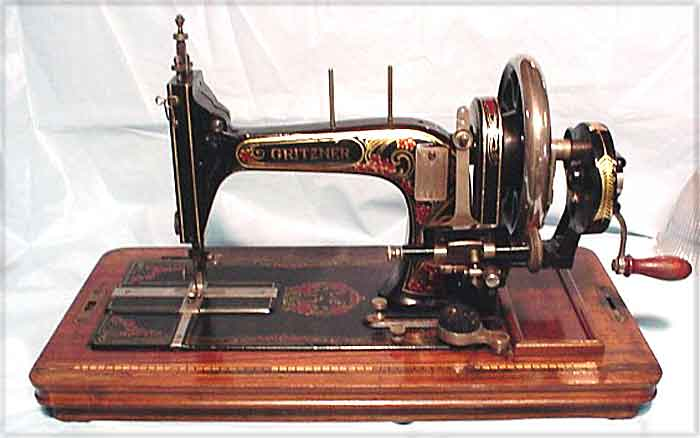
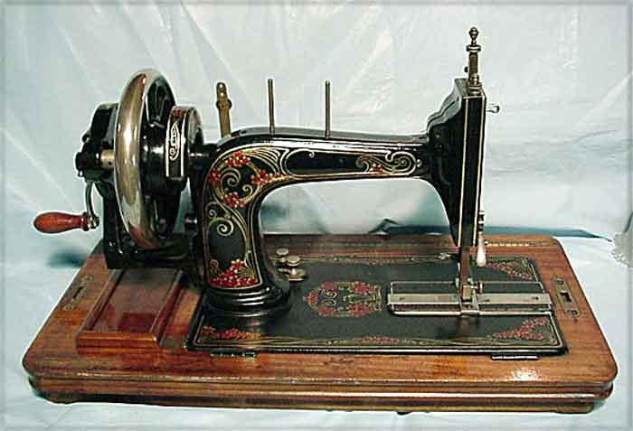
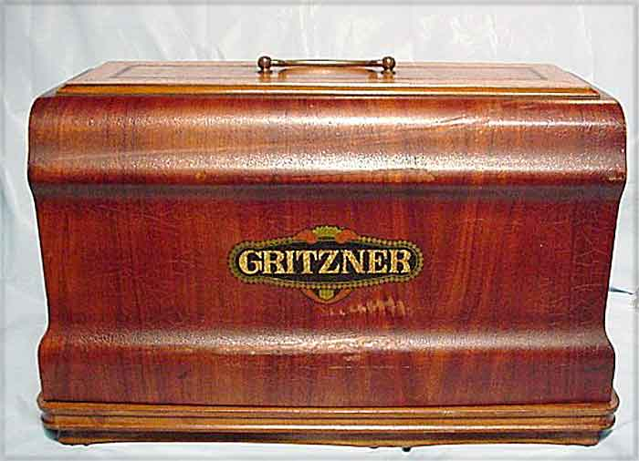
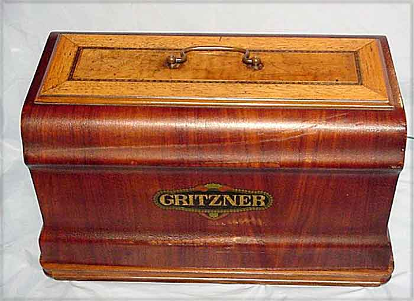

Max Gritzner, Karlsruhe, Durlach
c.1924
Front View / Rear View / Cover / Cover Top
Front View

Rear View

Cover

Cover Top

©
Alan Quinn 2002 All Rights Reserved
This page may not be reproduced or distributed in part or in whole without the prior written permission of the copyright owner